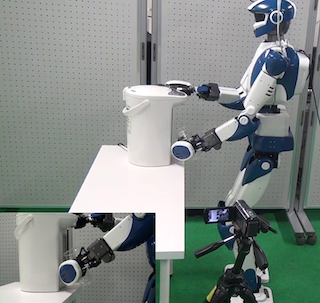
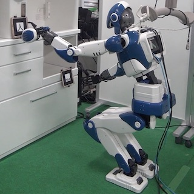
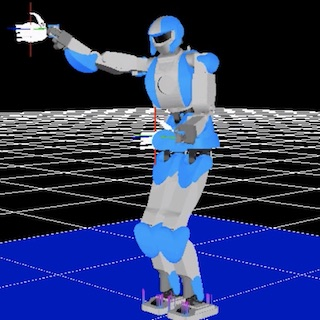
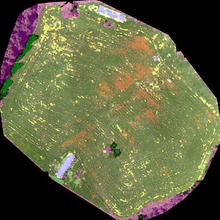

Research activity
Motion Generation for Humanoid Robots

Humanoid serving coffee
Humanoid controller based on visual info

Real-time humanoid approaching kitchen

Following random target inputs
Agriculture Robotics

Grassland Segmentation